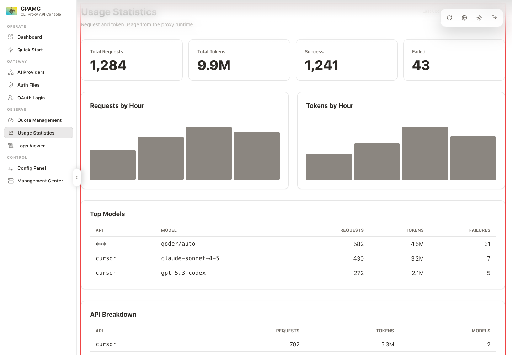
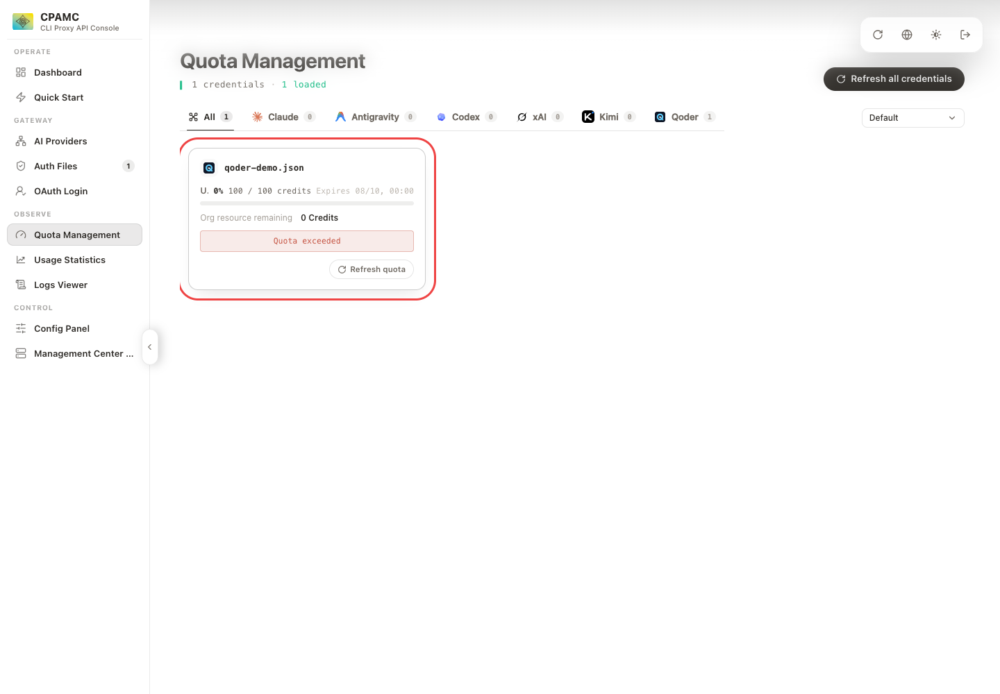

PR 20 · Dashboard upstream sync and hardening
Local development build at commit fc473b6 · light theme · 1440×1000 viewport · controlled local API fixture with non-sensitive demo data.
What changedUpstream v1.22.2 integrated with safer auth storage, usage refreshes, reverse-proxy paths, and Qoder quota state.
Why it mattersConcurrent requests and multiple dashboard profiles no longer overwrite or reuse the wrong state.
Review cueRed callout borders mark the protected usage surface and exhausted-quota state; focused tests prove non-visual race and isolation behavior.
1. Usage state remains intact across competing refreshes
The callout marks the page state protected by latest-request ownership; concurrency behavior itself is proven in the focused test evidence below.
IMPLEMENTED · Populated usage state after overlapping refresh handling

2. Focused behavioral proof
These deterministic regressions cover the non-visual request-ordering, profile-isolation, cleanup, and reverse-proxy path contracts.
PASS UsagePage: newest request exclusively owns state and loading PASS UsagePage: unmount invalidates an in-flight request PASS UsagePage: stale failure cannot propagate after newer success PASS Auth: same backend remains isolated across panel paths PASS Auth: scoped and legacy records clear without unrelated data loss PASS Paths: extensionless, served-file, and dotted mounts normalize correctly PASS Qoder: exhausted quota renders warning severity Focused runs: 23 pass, 0 fail
3. Qoder exhausted quota is explicit
Both quota hosts expose the exhausted state as a visually distinct alert.
IMPLEMENTED · Exhausted Qoder quota alert
